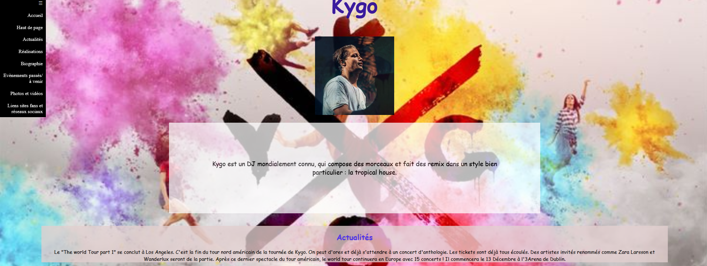

À propos de moi
J’ai 26 ans et suis étudiant en IT, spécialisé en développement logiciel après une réorientation (ancien étudiant en urbanisme...)
Mes compétences
Développement logiciel
Développement web
Gestion de projet
Mes réalisations

Fansite
Projet de groupe sur un site dédié à des passions diverses.

Site Kygo
Projet individuel sur la création d’un site pour un artiste.